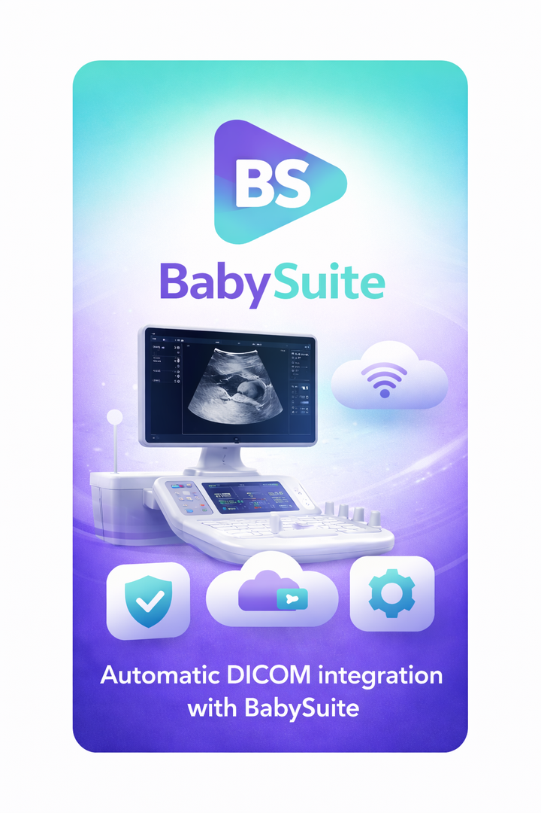

Proposito
Conectar o ambiente de diagnostico por imagem a uma experiencia de uso simples e estavel para equipes medicas.
Aplicativo para integracao de imagens e fluxos DICOM, com foco em produtividade clinica, padronizacao de laudos e operacao segura em ambiente hospitalar.

Conectar o ambiente de diagnostico por imagem a uma experiencia de uso simples e estavel para equipes medicas.
Clinicas, hospitais e profissionais que precisam de distribuicao padronizada do aplicativo em Windows 10/11.
Pagina institucional para submissao na Microsoft Store, incluindo acesso a suporte e instalador oficial.